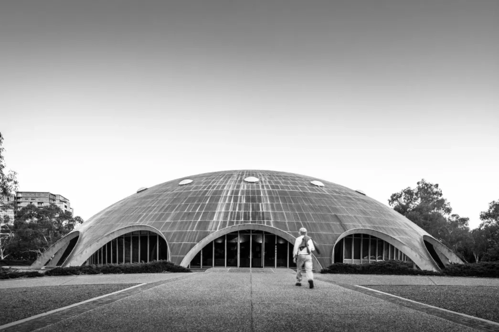
Australian Academy of Science: The Shine Dome
McCoy Cres, Acton
Grounds, Romberg and Boyd, 1959
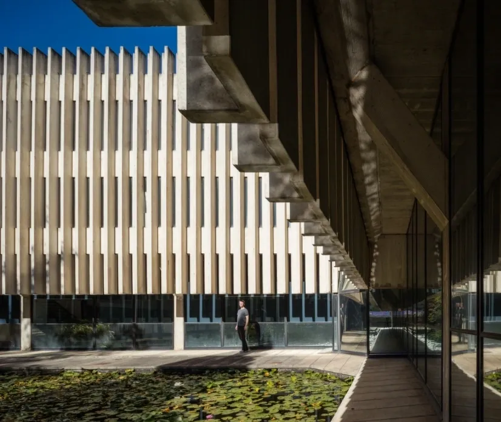
Churchill House
Northbourne Ave, Braddon
Robin Boyd, 1971
AT RISK
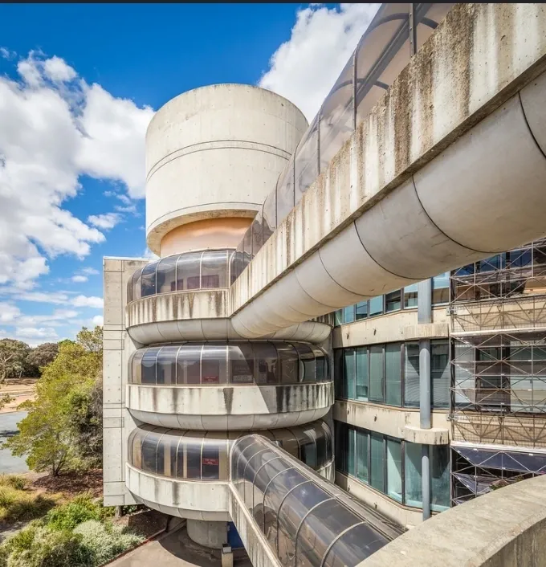
Callam Offices
Callam Street, Woden
John Andrews, 1977-81
NB: Also check out his residences at the University of Canberra and his Cameron Offices in Belconnen
AT RISK
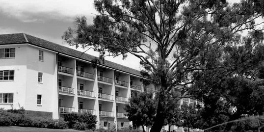
University House
Balmain Crescent, Australian National University, Acton
Brian Lewis, 1954
NB: the interiors of this building are fab including custom design furniture by Fred Ward - a walk around the rest of ANU will also not disappoint, mid-century gems are everywhere!
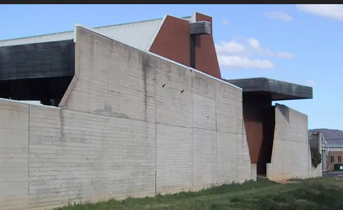
Australian War Memorial Annexe
Callan St, Mitchell
Enrico Taglietti, 1979
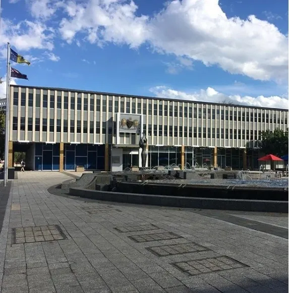
Civic Square
Including Legislative Assembly & Canberra Museum and Gallery
London Circuit, City
Yuncken and Freeman, 1961
AT RISK
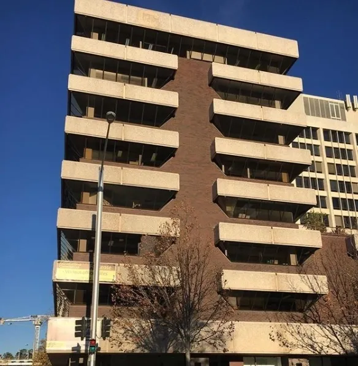
Colonial Mutual Building
University Ave, City
Civil & Civic and Towell, Rippon and Associates, 1968
AT RISK
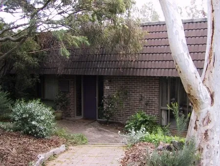
Urambi Village & Wybalena Grove
Housing Co-operatives:
Urambi Village, Crozier Cct, Kambah Wybalena Grove, Cook8
Michael Dysart, 1974
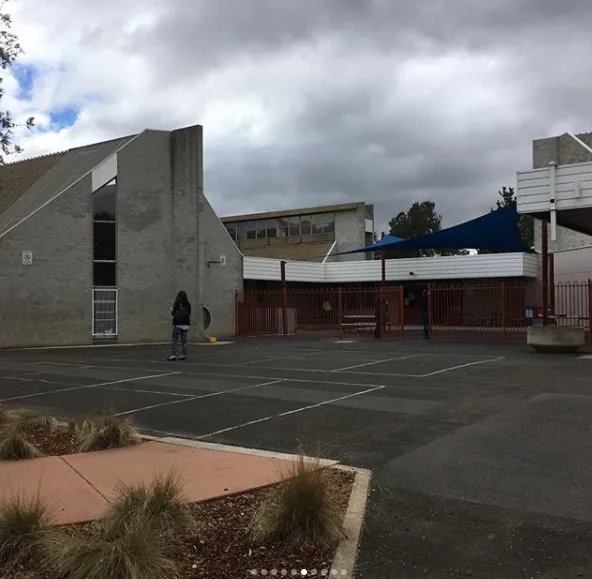
Giralang Primary School
Atalumba Close, Giralang
Enrico Taglietti, 1976
NB: there are so many Taglietti gems – how about a side trip to the Dickson Library?
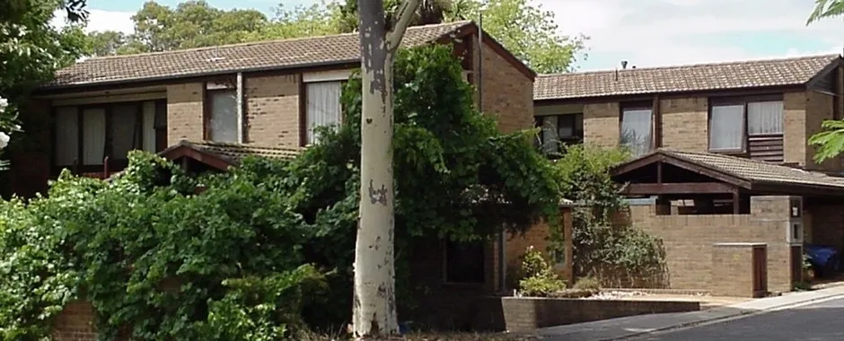
Swinger Hill Housing
Barnet Close, Swinger Hill
Ian McKay and Partners, From 1969
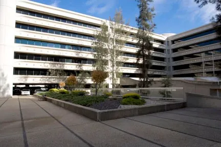
Edmund Barton Building
Kings Avenue, Barton
Harry Seidler, 1973
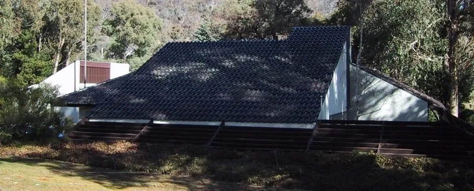
Australian Institute of Architects Headquarters
2A Mugga Way, Red Hill
Ancher, Mortlock, Murray and Woolley, 1967
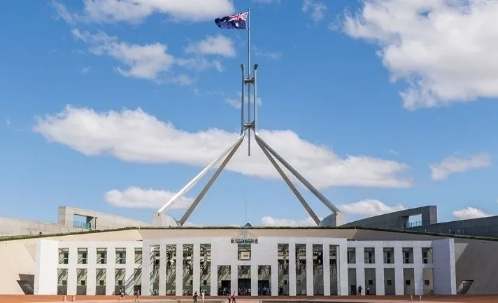
Australian Parliament House
Parliament Dr, Canberra
Mitchell, Giurgola & Thorp, 1988
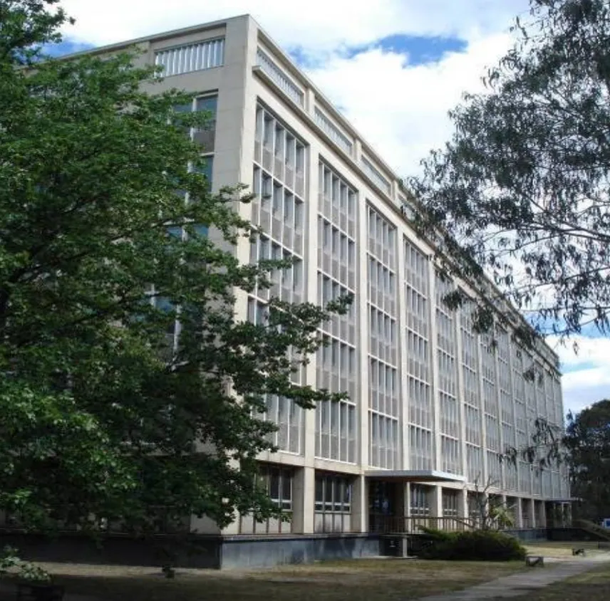
Anzac Park East and West (Portal Buildings)
Anzac Parade, Reid/Campbell
Richard Ure, Department of Works, 1965
NB: The East Building has recently been fully demolished.
AT RISK
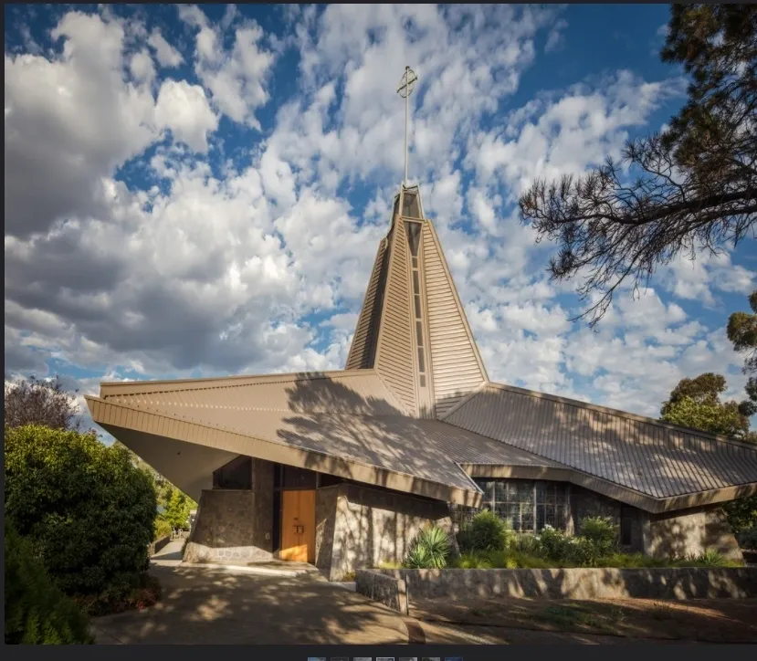
St Joseph’s Church
Boronia Drive, O’Connor
Kevin Curtin, 1971
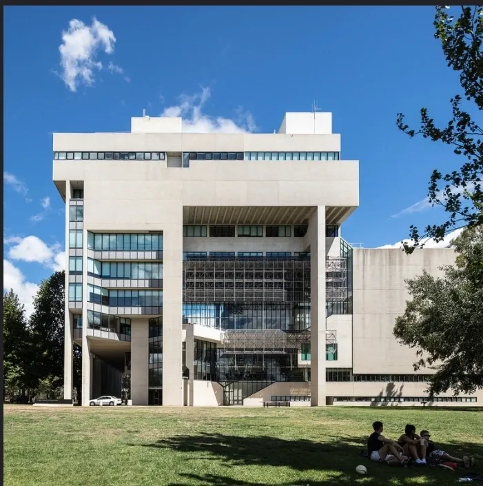
High Court of Australia
Parkes Pl, Parkes
Edwards, Madigan, Torzillo, Briggs, 1980
NB: Of course, next door neighbour and architect sibling - the National Gallery deserves its own mention, but we are out of space!
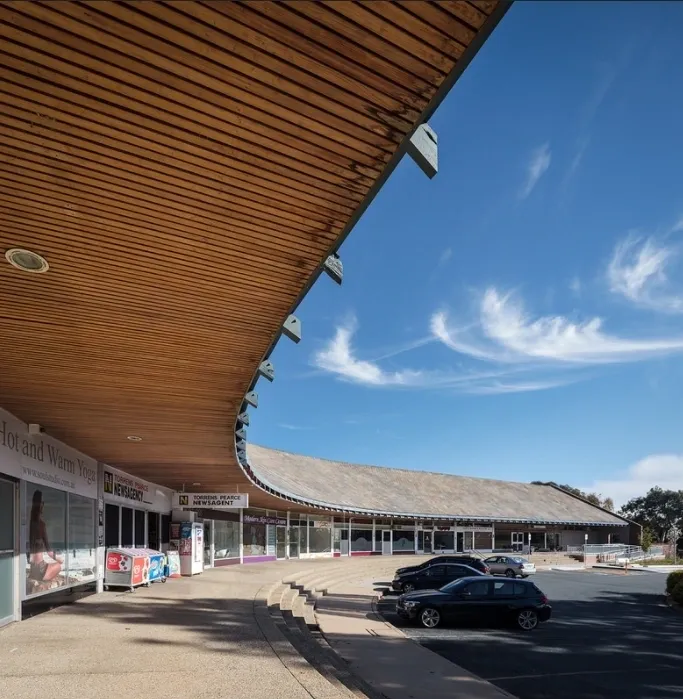
Torrens Townhouses and Shopping Complex
Beasley Street, Torrens
Dirk Bolt, 1967
NB: the Burgmann College complex at ANU is also a great example of Bolt’s work
AT RISK
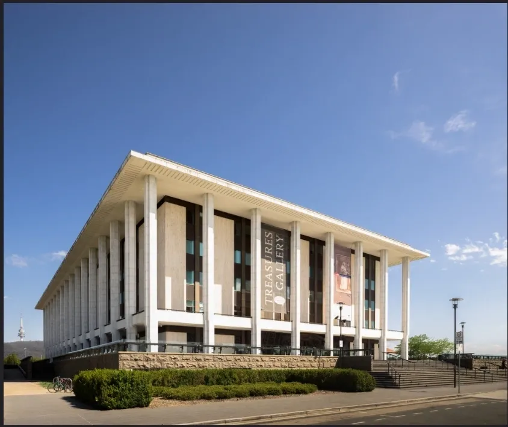
National Library of Australia
Parkes Place, Parkes
Bunning and Madden, 1968
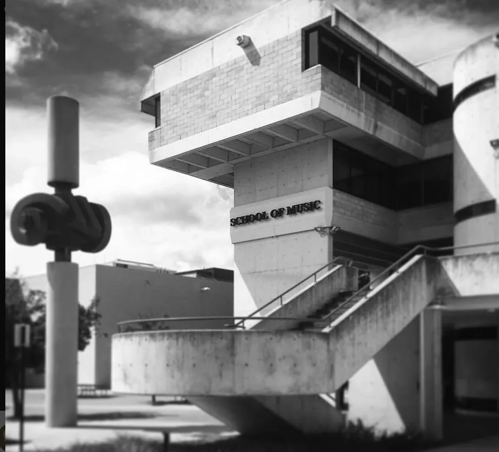
School of Music
Childers Street, Acton
Daryl Jackson & Evan Walker, 1976
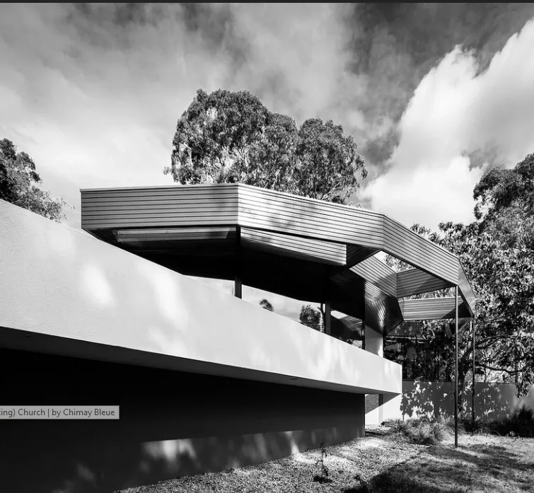
The Benjamin House
Also known as The Round House
10 Gawler Cres, Deakin
Alex Jelinek, 1959
B: Deakin, and nearby Yarralumla, is full of great mid-century houses, a meander through the streets is lots of fun